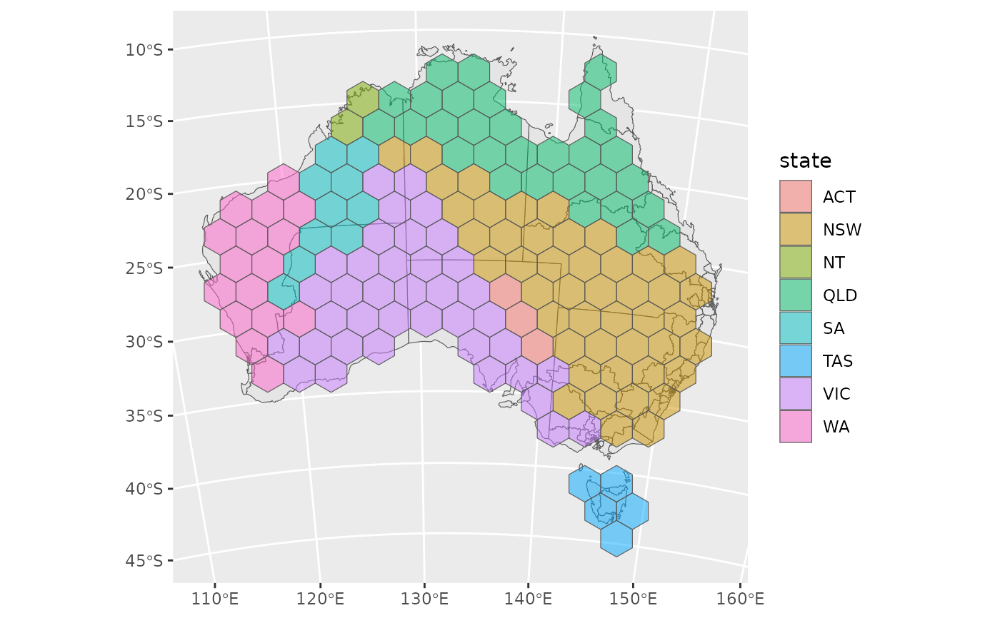

Allocates each tile to exactly one region, such that the total squared
distance between each region and its tile is minimised. This optimal
assignment is solved with the Hungarian algorithm via clue::solve_LSAP().
Arguments
- object
An sf object, or a geometry column (sfc), of regions. It is transformed to the coordinate reference system of
tile, so the regions are allocated in the plane the tiles were made in.- tile
A geometry column (sfc) or sf object of tiles, with one tile for each region of
objectand in a projected coordinate reference system, such as those made byhex_grid().- group
Optionally, the group of each region (e.g. states), as a column of
objectgiven unquoted (group = state) or as a string (group = "state"), or as a vector with one value for each region. The tiles of each group are kept contiguous.
Value
For an sf object, object with its geometry replaced by the allocated
tiles, keeping all of its other columns and the order of its rows. For a
geometry column, a geometry column of the allocated tiles in the same
order. The tiles are in their own coordinate reference system.
Details
Minimising squared (rather than absolute) distance guarantees that no two regions swap their relative position: for any two regions, the displacement from one tile to the other never points against the displacement between the original regions.
The tiles are split into islands of adjacent tiles, such as those made for
each landmass by hex_grid(), and each region is only allocated a tile on
the island nearest to it, provided that every island has one tile for each
of its nearest regions. Otherwise, regions are allocated tiles from all
islands.
When group is given, the tiles of each group are kept contiguous. The
tiles are first allocated as above, then tiles that are cut off from the
rest of their group are moved to its border by shifting tiles of other
groups along the shortest path between them. Finally, the regions of each
group are optimally allocated to that group's tiles. This guarantee of
contiguity comes at the cost of the no-swap guarantee between groups.
See also
hex_grid() to make the tiles, and hexmap(), which does both:
hexmap(x) is the same as hex_allocate(x, hex_grid(x)).
Examples
library(sf)
#> Linking to GEOS 3.14.1, GDAL 3.12.2, PROJ 9.7.1; sf_use_s2() is TRUE
election <- st_transform(aus_election_2025, 3577)
grid <- hex_grid(election)
election_hex <- hex_allocate(election, grid, group = state)
library(ggplot2)
ggplot() +
geom_sf(data = election) +
geom_sf(data = election_hex, aes(fill = state), alpha = 0.5)
